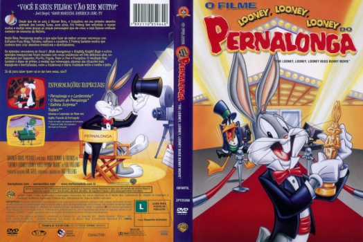
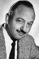

Outro Título:The Looney, Looney, Looney Bugs Bunny Movie
País:United States, 79 minutos
Idiomas falados:Francês, Inglês, Português
Gênero(s):Animação, Comédia, Família
Diretor(s):Friz Freleng
Escritor(es):David Detiege, Friz Freleng, John W. Dunn, Tedd Pierce, Warren Foster
Codec:MPEG-2 (DVD)
Número: 5847


Certificado:L
Sinopse:
Neste filme, Pernalonga mostra o que sabe fazer de melhor: arrumar encrencas com Eufrasino Puxa-Briga, Patolino, mafiosos e cavaleiros. Pernalonga apresenta uma premiação com vários curtas clássicos do Looney Toon.
Elenco: 
Tipo de mídia: DVD5,
Legendas: Francês, Inglês, Português, Sem Legendas
Alugado: Não
Tela: Anamorphic Widescreen